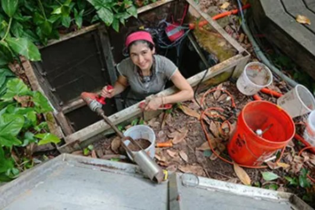
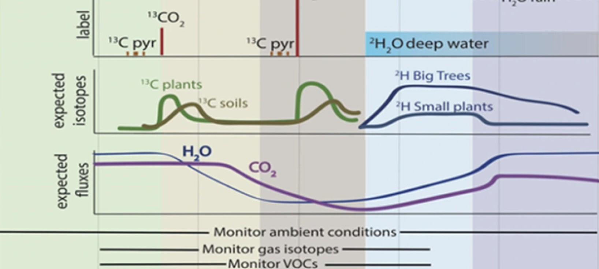
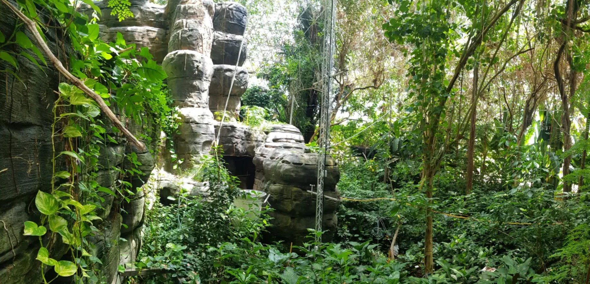
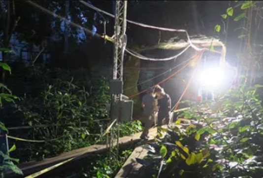
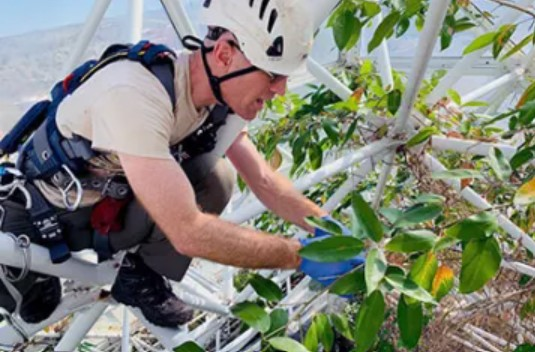

Tropical Rainforest
A 20,000 sq ft Amazon Basin model — one of the world's largest controlled tropical rainforests, where scientists study how forests respond to drought, warming, and atmospheric change.

The Amazon Basin Model
Biosphere 2's rainforest has a surface area of 20,000 square feet and is modeled principally on the Amazon Basin. Plants range from 74 to 80 feet tall — tall enough to reach the glass of the rainforest pyramid.
Before the first crewed mission, over 400 species and 2,800 individual plants were introduced from Puerto Rico, Belize, Venezuela, and Brazil. Research focuses on the interaction between plants, atmospheric gases, and water — uncovering how rainforest ecosystems process and release gases under changing atmospheric conditions.
Active Experiments
Climate change is reshaping tropical forests globally. Biosphere 2's rainforest enables controlled experiments impossible in the field — isolating variables like temperature, CO₂, and water availability with precision.

Thermal Limits of Canopy Leaves
Exploring the thermal limits of tropical forest canopy leaves — how close do rainforest leaves operate to their lethal temperature threshold, and what happens when warming pushes them past it?
Researchers install fine-wire thermocouples on canopy leaves throughout the rainforest, measuring leaf temperature alongside ambient conditions. The data reveals whether tropical trees are already operating near their thermal edge — a critical question for Amazon Basin futures.

Trees as Methane Conduits
Current experiment: Trees as conduits for connecting below-ground microbial processes to above-ground methane emissions at the Terrestrial-Aquatic Interface.
The global methane budget remains poorly constrained. In the Amazon Basin, tree trunks account for roughly 50% of methane flux from flooded forests. This research analyzes methane emissions across different forest types and tests automated measurement systems that can operate through flooding cycles — technology that could transform how we monitor tropical wetland greenhouse gas emissions.
What We Study
Water Use Strategies
How rainforest plants adjust water uptake and transpiration through controlled drought experiments — predicting Amazon resilience to future drying.
Gas Exchange
Tracking CO₂, water vapor, and volatile organic compounds exchanged between forest and atmosphere under manipulated conditions.
Drought Response
Inducing controlled drought to measure carbon allocation, stomatal behavior, and mortality thresholds across species.
Eddy Covariance
Tower-mounted instruments measure net ecosystem exchange of carbon and water across the entire 20,000 sq ft canopy.
Inside the Rainforest





Biosphere 2's rainforest allows us to do what no field site can: push an entire tropical forest past its tolerance threshold and measure every response — from leaf to atmosphere — in real time.
— Dr. Joost van Haren, Director of Rain Forest ResearchStudy the Rainforest
Researchers interested in conducting rainforest experiments at Biosphere 2 can submit a proposal through the user facility program. Access to instruments, sensor networks, and on-site housing is available.